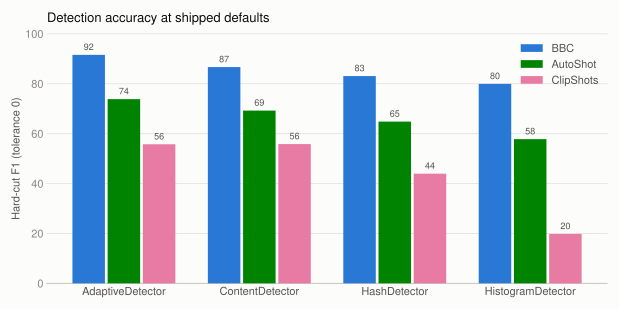
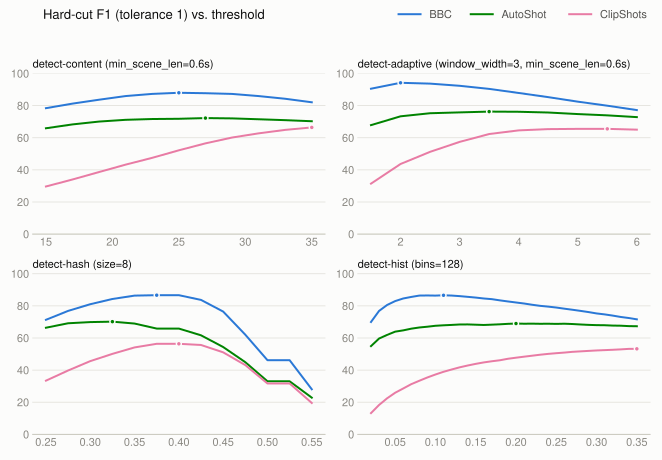
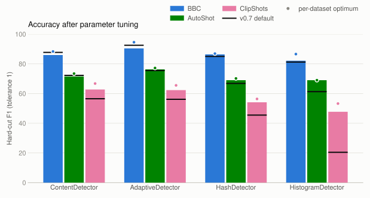

Benchmarks
PySceneDetect's detectors are benchmarked for accuracy against public
shot-boundary-detection corpora. Scoring follows the
TRECVID-SBD convention
(greedy 1-to-1 nearest-neighbor matching with a configurable frame tolerance for hard cuts;
point-in-interval matching for fades), so numbers are comparable to published results.
The benchmark harness, datasets, and full raw results live in
benchmark/ on GitHub.
Three datasets are used, chosen to cover very different content:
- BBC Planet Earth - 11 long-form broadcast episodes (hard cuts only)
- AutoShot - short-form web/user-generated clips (hard cuts only)
- ClipShots - 500 short web clips with hard cuts and typed gradual transitions
Accuracy at default settings

Hard cuts, strict frame-exact matching (tolerance 0). F1 cells are shaded by score.
BBC Planet Earth
| Detector | Recall | Precision | F1 |
|---|---|---|---|
| AdaptiveDetector | 87.12 | 96.55 | 91.59 |
| ContentDetector | 84.70 | 88.77 | 86.69 |
| HashDetector | 92.30 | 75.56 | 83.10 |
| HistogramDetector | 89.84 | 72.03 | 79.96 |
| ThresholdDetector * | 0.06 | 0.70 | 0.11 |
AutoShot
| Detector | Recall | Precision | F1 |
|---|---|---|---|
| AdaptiveDetector | 70.59 | 77.46 | 73.86 |
| ContentDetector | 63.49 | 76.19 | 69.26 |
| HashDetector | 56.48 | 76.11 | 64.84 |
| HistogramDetector | 63.27 | 53.23 | 57.82 |
| ThresholdDetector * | 0.75 | 38.64 | 1.47 |
ClipShots (hard cuts)
| Detector | Recall | Precision | F1 |
|---|---|---|---|
| AdaptiveDetector | 85.97 | 41.25 | 55.75 |
| ContentDetector | 81.93 | 42.36 | 55.84 |
| HashDetector | 81.34 | 30.14 | 43.98 |
| HistogramDetector | 72.20 | 11.47 | 19.80 |
| ThresholdDetector * | 0.08 | 0.58 | 0.14 |
ClipShots (fades)
| Detector | Recall | Precision | F1 |
|---|---|---|---|
| AdaptiveDetector | 13.65 | 98.12 | 23.96 |
| ContentDetector | 26.03 | 98.04 | 41.14 |
| HashDetector | 18.77 | 94.53 | 31.33 |
| HistogramDetector | 69.67 | 81.99 | 75.33 |
| ThresholdDetector * | 5.69 | 99.24 | 10.77 |
* ThresholdDetector detects fades to/from black, not shot-to-shot transitions; near-zero hard-cut scores are expected. Included for completeness.
Parameter sweeps
Beyond the default values, a sweep over each detector's key parameters shows how accuracy per dataset changes:

Dots mark each dataset's optimum within the shown parameter slice. Long-form broadcast content (BBC) generally prefers lower thresholds than short web clips (ClipShots), so the defaults aim for a robust middle ground.

Scored by mean hard-cut F1 at 1-frame tolerance across all three datasets:
| Detector | Best mean F1 | Best parameters | v0.7 default |
|---|---|---|---|
| AdaptiveDetector | 76.3 | adaptive_threshold=3.5, window_width=3, min_scene_len=0.6s | adaptive_threshold=3.0, window_width=2 |
| ContentDetector | 73.4 | threshold=31, min_scene_len=0.6s | threshold=27 |
| HashDetector | 69.8 | threshold=0.35, size=8 | threshold=0.395, size=16 |
| HistogramDetector | 66.3 | threshold=0.20, bins=128 | threshold=0.05, bins=256 |
Full per-dataset breakdowns are in
benchmark/SWEEP_REPORT.md.
Benchmarking
See benchmark/README.md
for dataset download instructions and usage.
# Score one detector on one dataset:
python -m benchmark --detector detect-content --dataset BBC
# Grid sweep over detector parameters:
python -m benchmark.sweep --detector detect-content --dataset BBC \
--params "threshold=15:35:1;min_scene_len=0.0:1.0:0.1"